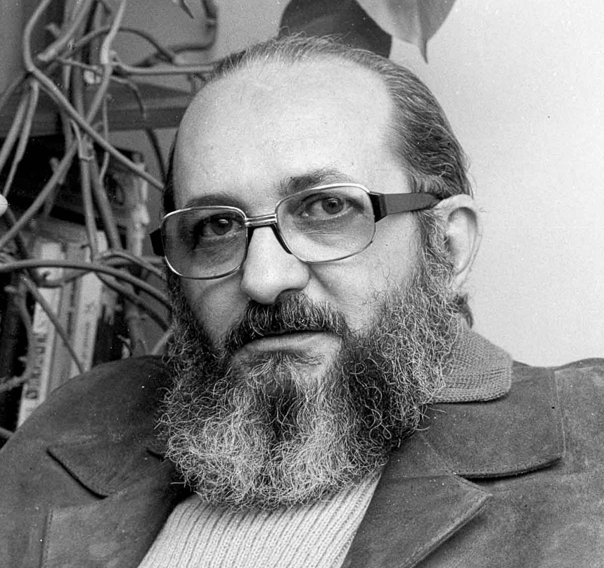
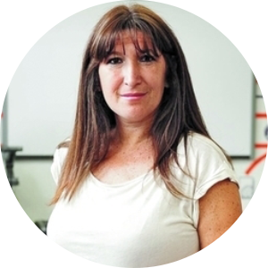

🎓 Momento 4: Reflexión pedagógica
"Reflexión final sobre la pregunta como motor del aprendizaje"
Reflexión final sobre la pregunta como motor del aprendizaje (mayéutica) y la problematización como enfoque metodológico. Mirada situada, ética y crítica del vínculo con la tecnología.
❓ La pregunta como motor del aprendizaje
La mayéutica socrática aplicada al contexto de la inteligencia artificial en educación.
🔍 La problematización como enfoque metodológico
Freire y la importancia de problematizar la realidad para transformarla.
🎯 Mirada situada, ética y crítica
Carina Lion y la perspectiva crítica sobre la tecnología educativa.
Referentes convocados

Sócrates
"Solo sé que no sé nada"
La importancia de la pregunta y la humildad intelectual

Paulo Freire
"Enseñar no es transferir conocimiento, sino crear las posibilidades para su producción o construcción"
La educación como práctica de la libertad

Carina Lion
"IA como interfaz que tensiona lo humano, lo educativo y lo técnico"
Perspectiva crítica sobre la tecnología educativa